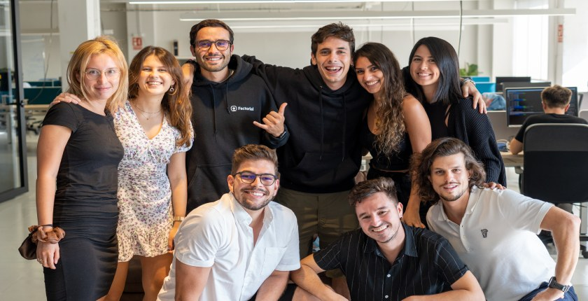

Bienvenidos a MagicGames, un proyecto que nace de las ganas, la ilusión y el sueño por crear un contenido serio, veraz y de calidad. Nuestra meta principal es ser una fuente fiable y respetable en el sector Gaming, ya que somos una revista online de videojuegos, de juegos de mesa y de todo lo relacionado con el mundo Gaming. Como jugadores y gente apasionada que disfruta con los videojuegos y con la gamificación, trabajamos cada día para ser un lugar de referencia al que acudir a la hora de poder enterarte de cualquier tipo de noticia o información de variedad. Tenemos un equipo muy completo, y juntos formamos un gran tándem en el que abordamos contenidos de diferentes plataformas, ya sea Playstation, Xbox, Nintendo, PC, juegos de mesa y periféricos. En resumidas cuentas, somos unos apasionados de los videojuegos y nos gusta y nos apasiona informar de todo lo relacionado con este sector. MagicGames esta formado por gente seria y comprometida, y siempre buscamos la calidad en todo lo que hacemos, y con eso confiamos en que vosotros podáis llegar a vernos como una web referente y transparente a la hora de informar sobre cualquier tema. Buscamos y trabajamos cada día para llegar a ser vuestra principal fuente de análisis e información. También cubrimos e informamos de eventos que puedan interesar a la comunidad. No queremos despedirnos sin antes pediros que nos sigáis en este bonito camino, y animaros a que forméis partes de este sueño junto a nosotros. Gracias de corazón por confiar en nosotros. “El corazón puede ser débil, pero algunas veces es todo lo que necesitamos. (Sora)” Síguenos en x para no perderte nada MagicGames y en nuestro canal de Wassap y ahora también en telegram 